Getting startedเริ่มต้นใช้งาน
The tabs, the menu and settings.แท็บ เมนู และการตั้งค่า
The four tabsแท็บทั้งสี่
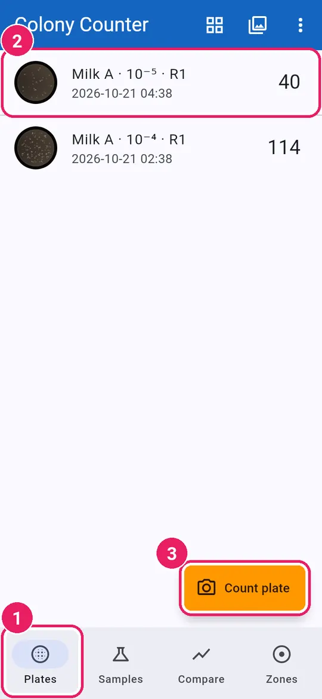
- 1Plates: every plate you countedเพลต: ทุกเพลตที่นับแล้ว
- 2Tap a plate to open itแตะเพลตเพื่อเปิด
- 3Count plate: photograph a new plateนับเพลต: ถ่ายภาพเพลตใหม่
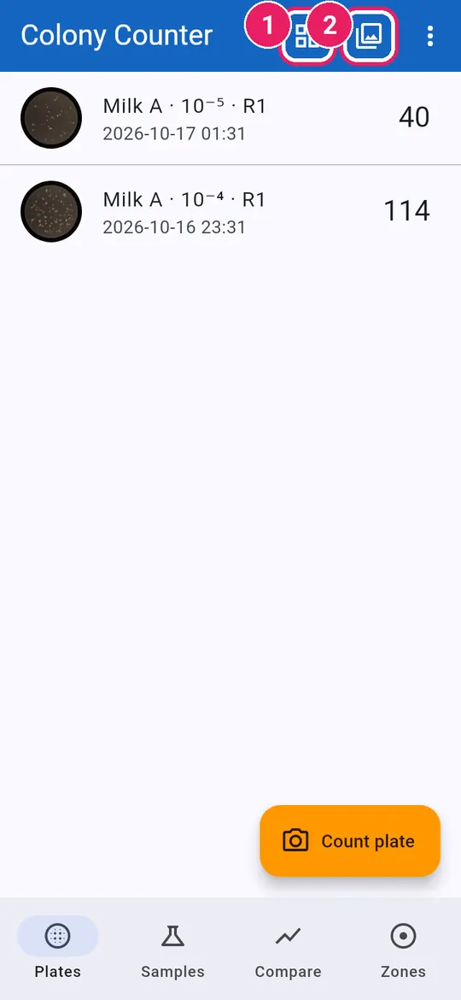
- 1Several plates in one photoหลายเพลตในภาพเดียว
- 2Import photo from the galleryนำเข้าภาพ จากคลังภาพ
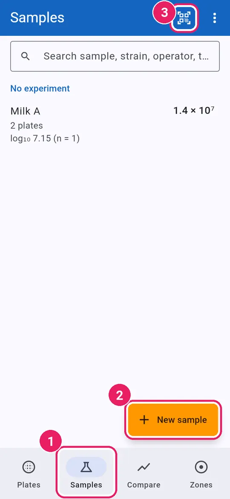
- 1Samples: CFU/mL of each sampleตัวอย่าง: CFU/mL ของแต่ละตัวอย่าง
- 2New sample: plan a dilution seriesตัวอย่างใหม่: วางแผนการเจือจาง
- 3Scan plate label (QR code)สแกนฉลากเพลต (คิวอาร์โค้ด)
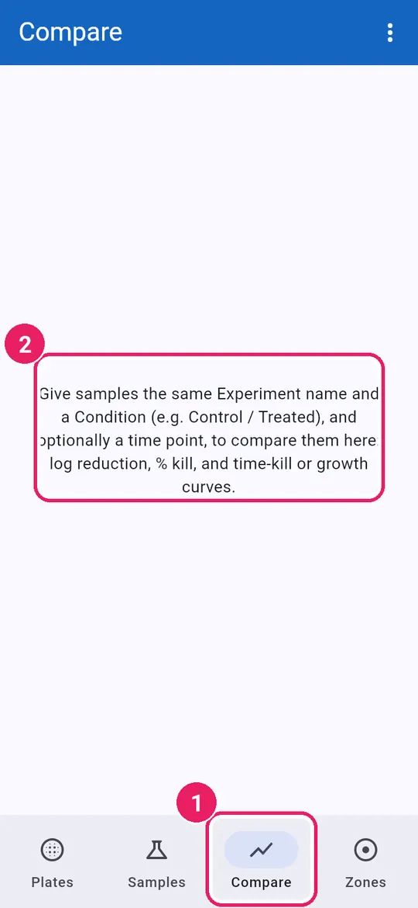
- 1Compare: conditions and curves over timeเปรียบเทียบ: สภาวะและกราฟตามเวลา
- 2How to set up a comparisonวิธีเริ่มการเปรียบเทียบ
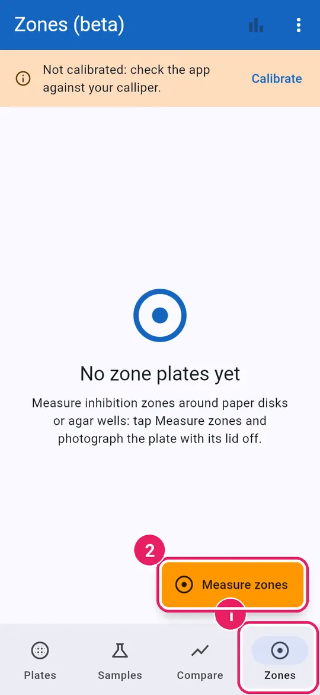
- 1Zones: inhibition zone platesโซนยับยั้ง: เพลตวัดโซนยับยั้ง
- 2Measure zones: photograph a plateวัดโซนยับยั้ง: ถ่ายภาพเพลต
The ⋮ menuเมนู ⋮
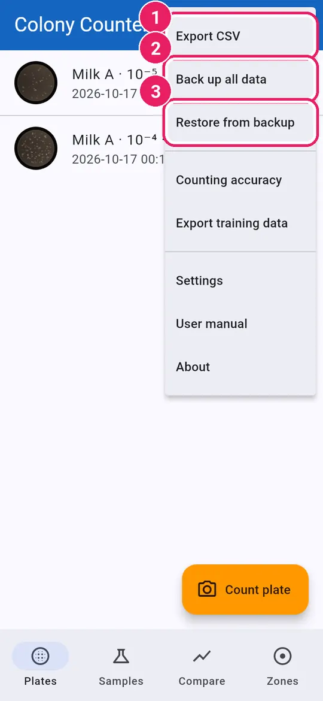
- 1Export CSV of the countsส่งออก CSV ของผลการนับ
- 2Back up all data to a fileสำรองข้อมูลทั้งหมด เป็นไฟล์
- 3Restore from backupกู้คืนจากข้อมูลสำรอง
Tap ⋮ at the top right.แตะ ⋮ ที่มุมขวาบน
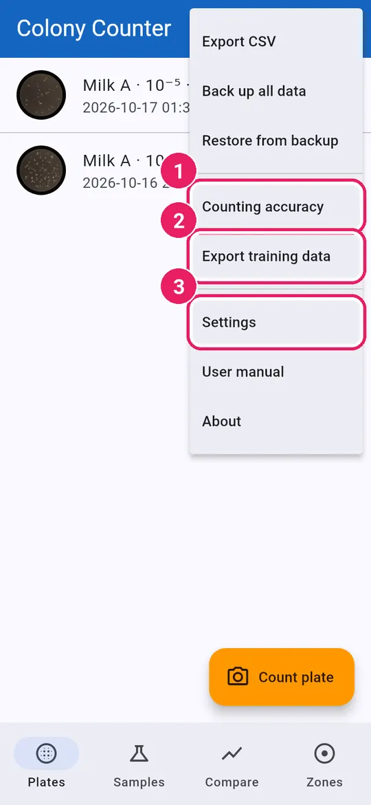
- 1Counting accuracy on your platesความแม่นยำการนับ กับเพลตของคุณ
- 2Export training data: photos with marksส่งออกข้อมูลสำหรับฝึกโมเดล
- 3Settingsการตั้งค่า
Settingsการตั้งค่า
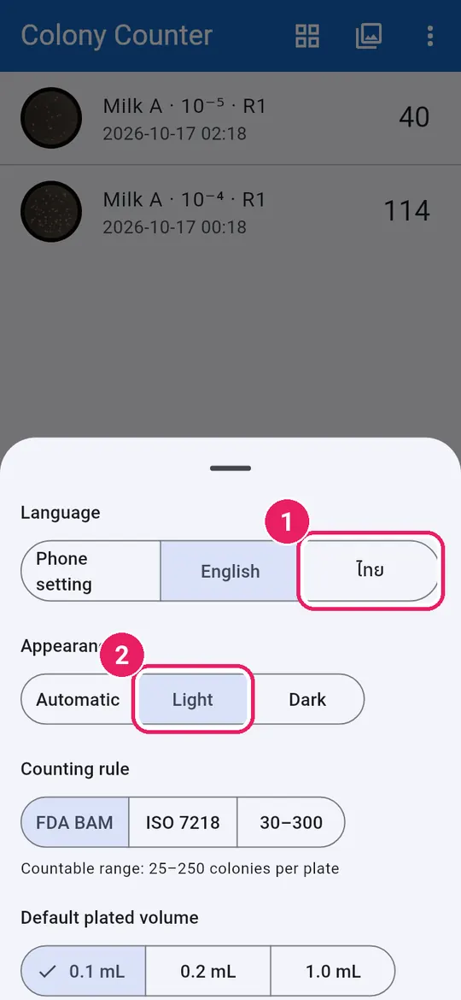
- 1Language: Phone setting, English or ไทยภาษา: ตามเครื่อง English หรือ ไทย
- 2Appearance: Automatic, Light or Darkรูปแบบการแสดงผล: อัตโนมัติ สว่าง มืด
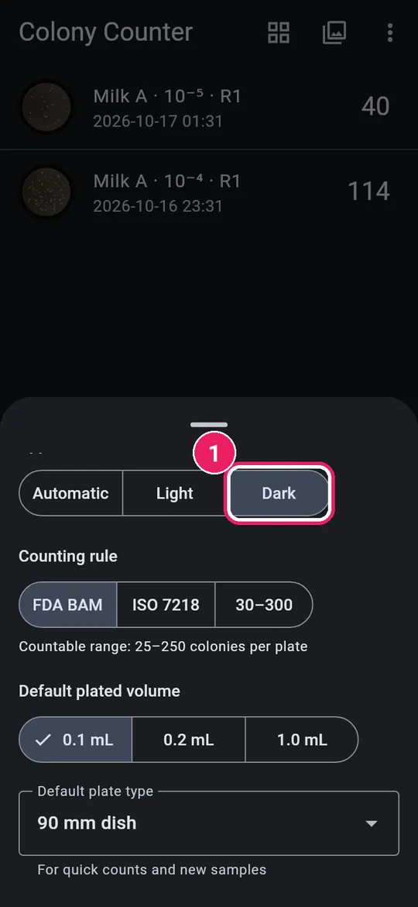
- 1Dark: the dark themeมืด: ธีมสีเข้ม
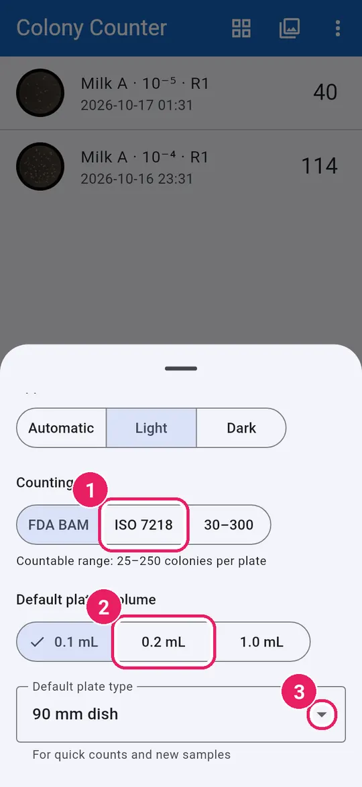
- 1Counting rule for CFU/mLเกณฑ์การนับ สำหรับ CFU/mL
- 2Default plated volumeปริมาตรที่เพาะเริ่มต้น
- 3Default plate typeชนิดจานเริ่มต้น
The countable range is shown under the rule.ช่วงที่นับได้แสดงใต้เกณฑ์การนับ
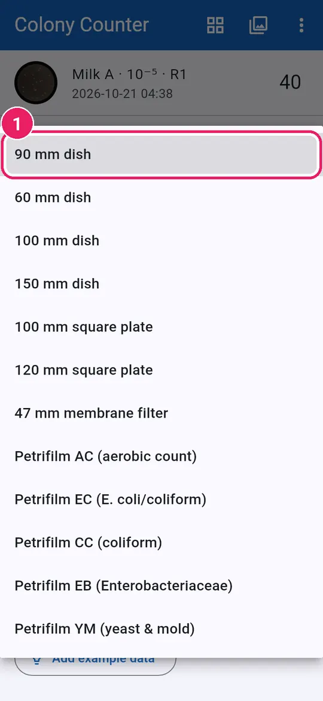
- 1Pick the dish or film you useเลือกจานหรือฟิล์มที่ใช้ประจำ
Counting accuracyความแม่นยำการนับ
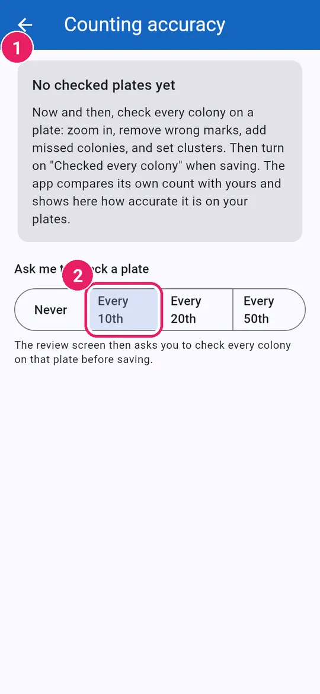
- 1How accuracy tracking worksวิธีติดตามความแม่นยำ
- 2How often to ask for a checkขอให้ฉันตรวจเพลต: บ่อยแค่ไหน
Aboutเกี่ยวกับแอป
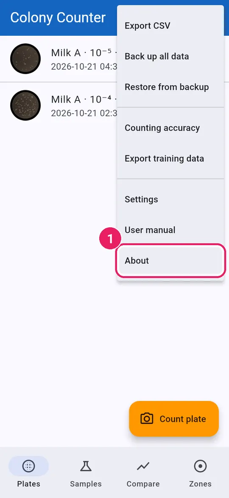
- 1Tap Aboutแตะ เกี่ยวกับแอป
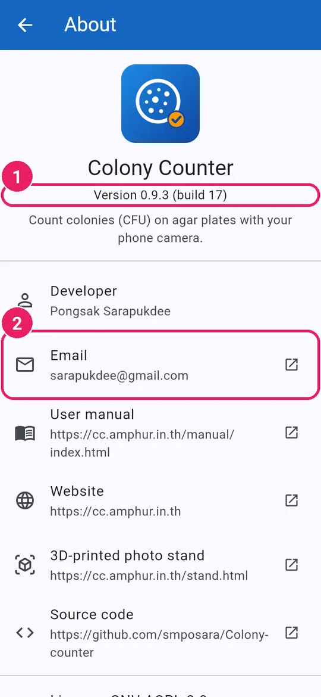
- 1The app versionเวอร์ชันของแอป
- 2Email the developerอีเมลถึงผู้พัฒนา
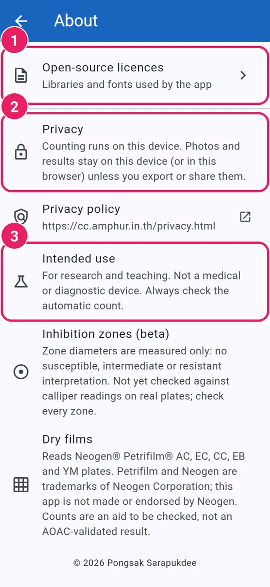
- 1Open-source licencesสัญญาอนุญาตโอเพนซอร์ส
- 2Privacy: data stays on this phoneความเป็นส่วนตัว: ข้อมูลอยู่ในเครื่องนี้
- 3Intended use: research and teachingวัตถุประสงค์: งานวิจัยและการสอน